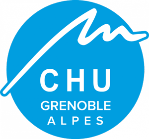

Expériences professionnelles
| 2018-2024 |
Ouvrier agricoleEARL Garaix - Tous les étés depuis 2018 (Montmiral) Travail d'équipe, autonomie, prise d'initiative, précision
|
| 2023-2024 |
Agent en blanchisserie industrielleBlanchisserie du CHU Grenoble Alpes - 5 mois, de décembre 2023 à mai 2024 (Echirolles) Travail d'équipe, rigueur, précision
|
| 2022 |
LibraireLibrairie des Cordeliers - Stage de 2 mois, avril et juin 2022 (Romans-sur-Isère) Curiosité, organisation, autonomie, prise d'initiative
|
Formations
| 2023-2026 |
BUT InformatiqueUniversité Grenoble Alpes, IUT2 - En cours, 3 ans (Grenoble) Parcours Réalisation d'applications, conception, développement, validation
|
| 2022 |
Licence Sciences du langage (2ème année)Université Grenoble Alpes, UFR LLASIC - 3 mois (Grenoble) J'ai participé à un projet de recherche en phonétique sur les difficultés des apprenants japonais à faire la différence entre certains sons français. Pour faire cela, nous avons programmé une interface de test sur le logiciel Praat : ce n'était pas très complexe, mais j'ai été captivée. Plus tard, lorsque j'ai voulu arrêté la formation car elle ne me convenait plus, j'ai repensé à ce moment et j'ai décidé de m'orienter vers l'informatique. |
| 2020-2022 |
DUT Information-CommunicationUniversité Grenoble Alpes, IUT2 - 2 ans (Grenoble) Parcours Métiers du Livre et du Patrimoine
|